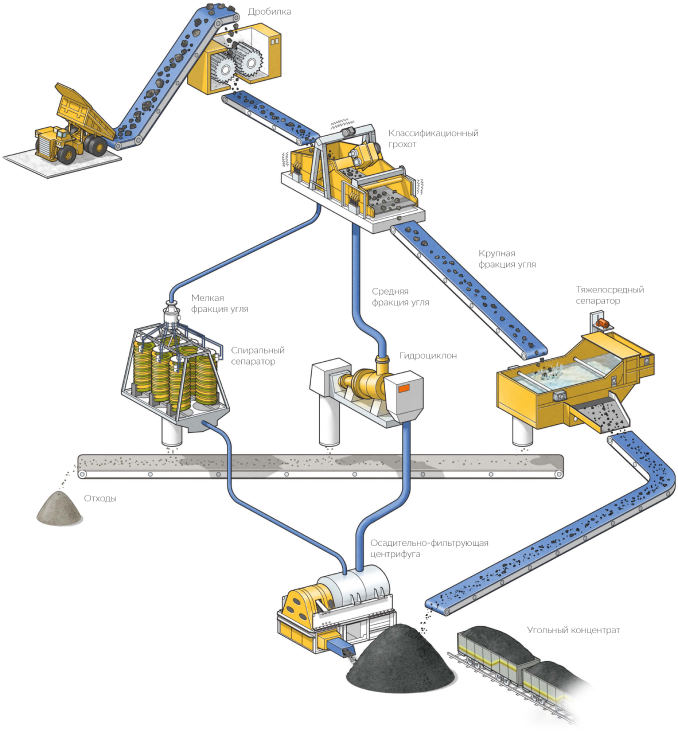
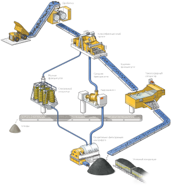
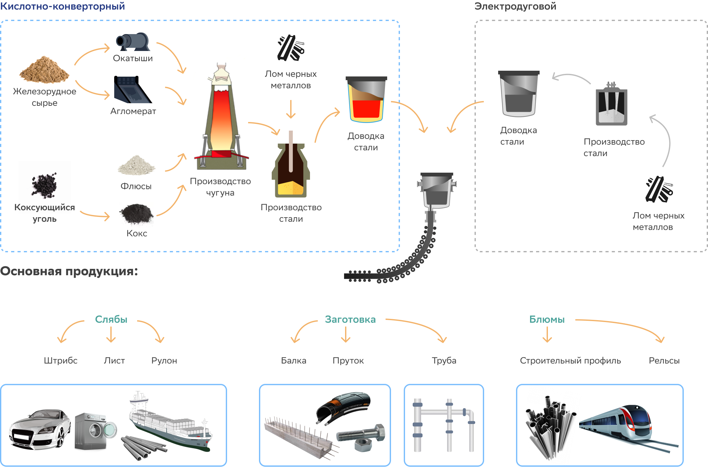
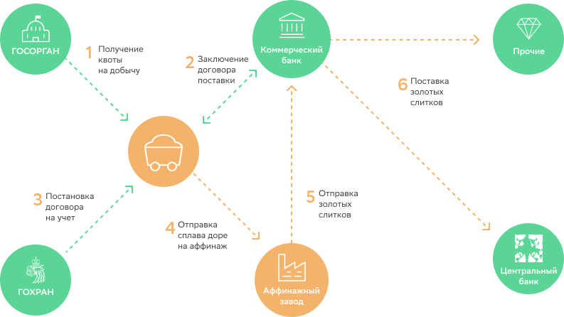
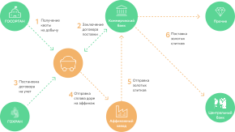

Банковских продуктов
Банковские гарантии, кредиты и др. продукты.
В горнодобывающей и металлургической промышленности можно выделить три ключевые отрасли:
Доля российской металлургии в структуре ВВП невелика — около 5% , однако от металлургии
зависят три базовые отрасли экономики: промышленность, строительство и топливно-энергетический комплекс,
которые в совокупности обеспечивают около
60% ВВП страны.
Несмотря на определенные схожие моменты в производственном процессе, каждое месторождение даже одного и
того же металла требует разных технологий извлечения полезных ископаемых. Иногда даже одинаковые
производственные процессы, к примеру доменная выплавка чугуна, из-за различий в химическом составе руды
и прочих ресурсов требует уникальной настройки и адаптации технологической схемы.
В остальном процессы финансового моделирования, кредитного анализа и структурирования сделок будут во
многом схожи для всех трех отраслей.
Для понимания специфики угольной, цветной и черной промышленности, необходимо разобрать ключевые этапы
цепочки создания стоимости.
1
Угольная промышленность
Технологию производства угля можно разделить на добычу,
дробление и обогащение.
Уголь в земле залегает отдельными пластами разной толщины на различной глубине. В
зависимости от уровня залегания угля под землей его добыча осуществляется открытым или
закрытым способом.
Для добычи закрытым способом производится бурение системы скважин и проходов под землей для
обеспечения доступа к местам залегания. Стоимость добычи закрытым способом гораздо выше (в
2–3 раза) открытого. При добыче угля открытым способом в угольном разрезе необходимо
срезать/взорвать пласт пустой породы — произвести вскрышу. Отношение объема вскрыши к объему
добытых полезных ископаемых называется коэффициентом вскрыши. Коэффициент вскрыши зависит от
конкретного месторождения и качества извлекаемого угля, отдельное значение будет
малоинформативно. К примеру, у энергетического угля в Экибастузском угольном бассейне
коэффициент вскрыши может составлять 0,9 м3/т, а при добыче антрацита в Кузнецком угольном
бассейне — 6,0
м3/т.
После того как произведена выемка пустой породы, производится взрыв и погрузка угля
экскаваторами на самосвалы или на ленточный конвейер. Далее уголь транспортируется на
обогатительную фабрику. Обогащение — это процесс обработки угля, в результате которого
происходит отделение «чистого» (сортового) угля от пустой породы и минеральных
примесей.
На схеме приведен процесс дробления и обогощения:
 
Сначала уголь поступает на дробильные установки, где он дробится на более мелкие фракции.
Далее — грохочение. Уже измельченный уголь просеивают на решетах и в сите с калиброванными
отверстиями, мелкими либо крупными.
Далее необходимо провести обогатительные процессы в отсадочных машинах. Уголь загружают на
сито, на которое подается вода. Мелкие частицы оседают в отверстия, а полученный уголь
направляется на сушку. В результате процесса обогащения получается концентрат, в котором
остается минимум примесей и пустой породы. В зависимости от качества угля процессы
обогащения могут включать несколько стадий и видов.
В зависимости от наличия в угле вещества, необходимого для коксования (спекания), угли можно
разделить на две большие категории — коксующиеся и энергетические.
Коксующийся уголь используется для получения металлургического кокса, который впоследствии
используется в доменных печах для производства чугуна и в последствии - стали..
Энергетический уголь используется в печах ТЭЦ для выработки электричества, пара и
тепла.
В зависимости от содержания в угле углерода и выделяемой теплоты угли делятся на марки.
Бурый уголь выделяет меньше всего теплоты и содержит наименьшее количество углерода
(<76%), антрацит выделяет наибольшее тепло при сгорании и содержит наибольшее процентное
соотношение углерода (>91%). При анализе Заемщика важно понимать, какую продуктовую
корзину углей он производит, так как марки углей сильно отличаются друг от друга по
стоимости в зависимости от их качества, а именно серности, зольности и теплоты сгорания, а
также возможности коксования. Чем более высокая теплота сгорания, тем дороже уголь.
Качество углей влияет на определение рынков сбыта. Сорт угля в России определяется маркой и размером куска. Для обозначения сортов используется следующая схема: Сорт = «марка» + «фракция» (размер кусков). Например, можно встретить обозначение угля ДР (длиннопламенный рядовой) или ДПК (длиннопламенный крупный с плитным). Также довольно часто обозначают только марку, а размер кусков не указывается.
В таблице приведена классификация углей и возможные рынки сбыта:
Таблица листается вправо
2
Цветная металлургия
Наибольшее количество Заемщиков Банка в секторе цветной металлургии приходятся на золотодобывающие и медные компании, в этой связи целесообразно рассмотреть производственный цикл применительно к этим компаниям.
Руда
Виды + состав:
1) Сульфидная
руда:
Cu (1-6%)
Fe (8-40%)
S (9-46%)
Zn (1-6%)
SiO2 (2-12%)
проч. (пустая
порода)
2) Окисленная
руда:
Cu (~2%)
Fe (~1%)
S (0,1-0,2%)
SiO2 (60-68%)
проч.
Медный
концентрат
Состав:
Cu
(8-45%)
Fe (40-50%)
S (30-35%)
Черновая
медь
Виды + состав:
Cu (96,0-96,4%)
Fe (0,01-0,04%)
S (0,02-0,1%)
Ni, Ag, Au и проч (в небольшом
количестве)
Шлак
Катод
(Cu>99%)
Катанка
(Cu>99%)
Руда
Виды + состав:
1) Сульфидная
руда:
Cu (1-6%)
Fe (8-40%)
S (9-46%)
Zn (1-6%)
SiO2 (2-12%)
проч. (пустая
порода)
2) Окисленная
руда:
Cu
(~2%)
Fe (~1%)
S (0,1-0,2%)
SiO2 (60-68%)
проч.
Медный
концентрат
Состав:
Cu (8-45%)
Fe (40-50%)
S (30-35%)
Черновая
медь
Виды + состав:
Cu (96,0-96,4%)
Fe (0,01-0,04%)
S (0,02-0,1%)
Ni, Ag, Au и проч (в небольшом
количестве)
Шлак
Катод
(Cu>99%)
Катанка
(Cu>99%)
Руда
Виды + состав:
1) Сульфидная
руда:
Cu (1-6%)
Fe (8-40%)
S (9-46%)
Zn (1-6%)
SiO2 (2-12%)
проч. (пустая
порода)
2) Окисленная
руда:
Cu
(~2%)
Fe (~1%)
S (0,1-0,2%)
SiO2 (60-68%)
проч.
Медный
концентрат
Состав:
Cu (8-45%)
Fe (40-50%)
S (30-35%)
Черновая
медь
Виды + состав:
Cu (96,0-96,4%)
Fe (0,01-0,04%)
S (0,02-0,1%)
Ni, Ag, Au и проч (в небольшом количестве)
Шлак
Катод
(Cu>99%)
Катанка
(Cu>99%)
Добыча руды осуществляется аналогично рассмотренному в предыдущем разделе процессу добычи
угля. Далее руда транспортируется на горно-обогатительный комбинат (ГОК), где происходит
дробление и измельчение руды с помощью дробилок и мельниц.
Для отделения частиц, содержащих металл, от пустой породы используются два основных способа:
флотация и гравитационное обогащение. При флотации с помощью химических реагентов создается
густая пена, которая поднимает частицы, содержащие металл, наверх, а пустая порода оседает.
При гравитационном обогащении руду помещают в жидкость высокой плотности, в результате
легкие зерна пустой породы всплывают, а металлсодержащие оседают.
Полученная после флотации или гравитационного обогащения металлсодержащая масса
обезвоживается. Продуктом обогащения руды на ГОК является концентрат, содержащий, как
правило, около 20% металла.
На базе расчета экономической эффективности принимается решение продавать концентрат или
осуществлять его дальнейшую переработку. В случае если компанией принято решение о
дальнейшей переработке, концентрат направляется на следующие стадии извлечения.
Технологии переработки концентрата различны. Для золота и серебра это может быть окисление с
последующим цианированием (выщелачиванием), для меди и никеля — плавка на штейн и
конвертирование, для платины и палладия — выплавка в электропечах и конвертирование.
В результате из концентрата получается продукт с содержанием металла 85–98%: это
медные/никелевые слитки, богатый платиновый/палладиевый концентрат, сплав Доре в случае с
золотом. Далее сплав Доре / слитки направляются на финальную очистку и переплавку для
получения готовой металлической продукции — золотых, серебряных, платиновых, палладиевых
слитков, медных и никелевых катодов с содержанием металла близким к 100%. Извлечь весь
металл из руды невозможно, возникают потери, размер которых определяется свойствами руды и
технологиями производства. Отношение массы извлеченного металла к общему первоначальному
содержанию металла в руде называется коэффициентом извлечения.
3
Черная металлургия
Производственный процесс начинается с добычи основных ресурсов — железной руды и коксующегося угля. Подробнее процесс добычи рассмотрен в разделе «Угольная промышленность».
Далее железная руда направляется на горно-обогатительный
комбинат (ГОК), где происходит дробление, обогащение (методом магнитной сепарации или
флотации) и окускование (агломерация или получение окатышей). Коксующийся уголь направляется
на коксохимические заводы для обжига в коксовых батареях и получения доменного
кокса.
Подготовленные на предыдущем этапе железная руда, кокс и другие ресурсы загружаются в
доменную печь, образуя шихту. В результате химического взаимодействия внутри печи образуется
чугун.
Передел чугуна в сталь производят в конвертерах. В кислородных конвертерах происходит
избирательное окисление примесей чугуна. На выходе получают сталь заданного химического
состава для дальнейшей выплавки слябов или квадратной заготовки. Для подготовки стали также
возможна выплавка в электродуговых печах из металлолома.
Далее слябы и заготовки направляются на производство листового проката (к примеру,
оцинкованный и полимерный лист), сортового проката (арматуры, рельсов, балок, проволоки),
метизов, труб и другой продукции.
Это пример вертикально интегрированного холдинга, который консолидирует практически все
переделы металлургического производства и самостоятельно обеспечивает свои потребности в
сырье. Однако отдельные компании черной металлургии могут завершить свой производственный
цикл на выпуске чугуна или стали, другие компании могут, напротив, сфокусироваться на более
высоких переделах и закупать уже готовый полуфабрикат для последующей переработки.
К примеру, мини-заводы закупают металлолом и переплавляют его в электродуговых печах на
готовую продукцию (лист, арматура, прочее). Большая часть заводов в Европе закупают
полуфабрикаты (слябы и заготовки) для производства стали, минуя начальные переделы.
Добывающая и металлургическая промышленность является лицензируемым
видом деятельности и объектом государственного регулирования. На отрасль распространяется действие
Гражданского, Трудового и Налогового кодексов, нормативно-правовой базы в области экологического
регулирования и промышленной безопасности, мониторинг со стороны Ростехнадзора и многое
другое.
В соответствии с Законом «О недрах» на разработку месторождения предоставляется лицензия, которая
устанавливает возможные виды деятельности на участке, сроки действия лицензии, условия, границы
участка и прочее. Предоставление лицензий осуществляется через государственную систему
лицензирования — Геолком России.
Используемые предприятием участки должны иметь правоустанавливающие документы — договоры аренды или
свидетельства о собственности. Проектная документация, градостроительный план земельного участка
утверждается Главгосэкспертизой (ГГЭ). Геологические и инженерные изыскания по проекту, которые
входят в состав проектной документации, регулируются нормами СНиП и постановлениями правительства
РФ.
После получения положительного заключения ГГЭ компания получает разрешение на строительство, которое
представляет собой документ, подтверждающий соответствие проектной документации требованиям,
установленным градостроительным регламентом. Разрешение на строительство выдается федеральным
органом управления государственным фондом недр.
Контроль за осуществлением строительства особо опасных объектов осуществляет Федеральная служба по
экологическому, технологическому и атомному надзору (Ростехнадзор). Далее Ростехнадзор осуществляет
проверки, мониторинг строительства и деятельности предприятия. Если в ходе проверок выявлены
существенные нарушения, Ростехнадзор может приостановить строительство или деятельность
объекта/цеха/шахты до устранения нарушения.
В части государственного контроля в области оборота товарной продукции наибольшему регулированию
подвержен оборот драгоценных металлов, в частности золото и серебра. Совершение сделок возможно
только с готовой товарной продукцией, сделки с минеральным сырьем не допускаются. Сырье подлежит
переработке только на предприятиях-переработчиках и аффинажных заводах на основании договора по
переработке сырья. На аффинаж компания также получает лицензию. Транспортировка может осуществляться
только специализированными предприятиями, обладающими техническими возможностями для перевозки
драгоценных металлов.
Схема продажи золота добывающими компаниями
 
Добывающие компании имеют право продавать слитки золота и серебра в
пределах установленной квоты. Гохран имеет преимущественное право покупки слитков золота и серебра,
размещая заказы на приобретение слитков и сообщая Банку России объемы поставок золота и серебра в
Госфонд России с указанием добывающих компаний, а также региональные годовые квоты по добыче золота
и серебра. Если компания нарушает установленные квоты, лицензия может быть отозвана.
Банк России и банки, обладающие соответствующей лицензией, приобретают слитки золота и серебра за
свой счет либо за счет своих клиентов (по договорам комиссии или поручения) у добывающих компаний.
Инвесторы и промышленные потребители имеют право покупать и продавать слитки золота и серебра только
Банку России и уполномоченным банкам.
Помимо стандартного запроса документов (лицензий, правоустанавливающих и финансовых) по металлургическим и горнорудным компаниям, Банку требуется ряд отчетов, которые позволяют закрыть производственные и технологические риски, а также верифицировать заложенные в финансовую модель предпосылки:
1
Отчет JORC: подготовка/актуализация отчета об оценке запасов по кодексу JORC, подготовленному независимым техническим консультантом
Цель отчета JORC — получить максимально точную геологическую модель
месторождения, его строение и распределение полезных ископаемых. Корректная геологическая модель
является основой. На ее базе строятся горные планы, планируется отработка месторождения,
подсчитывается
извлекаемый металл, делается финансовая модель всего предприятия и оценивается
рентабельность.
Анализируются предпосылки, которые заложены в отчет (подробнее см. п. 1 раздела II), в т. ч. факторы
риска и коэффициенты, учитывающие потери и разубоживание при добыче полезных ископаемых.
Итогом будет корректировка финансовой модели в соответствии с объемом ресурсов и запасов на
месторождении, календарем ввода в эксплуатацию месторождений и их выработки, горным планом добычи
полезных ископаемых, содержанием полезных ископаемых в руде и другими параметрами по добыче.
2
Отчет независимого технического консультанта, подтверждающий показатели, заложенные в финансовой модели
Цель — подготовить календарные графики реализации проекта, графики капитальных и эксплуатационных затрат для финансового анализа, оценить апробированность технологии и возможность реализации производственного плана, оценить удельные издержки на единицу продукции, проанализировать имеющиеся исследования и документы по проекту и подтвердить их комплектность.
В отчете должно быть подтверждение независимого технического консультанта по следующим основным вопросам:
3
Маркетинговый план с подробным анализом рынка и потенциальных потребителей
Цель отчета — подтвердить корректность выбора рынков сбыта и конечных покупателей, определить баланс спроса и предложения, а также стоимость продукции и способность конкурирования по цене.
Отчет должен отвечать на следующие вопросы:
Производственные риски
Основная группа рисков, оказывающая влияние на горнодобывающие и металлургические предприятия, —
производственные риски. Геология месторождения, условия залегания полезных ископаемых,
технология
добычи, обогащения и производства являются сложными и взаимосвязанными процессами. Если данные
геологоразведки были интерпретированы некорректно, компания сталкивается с искажением объема
запасов
и их качества. Это может привести как к меньшим объемам производства товарной продукции, так и
некорректно выбранной технологии обработки металлов, что потребует доработки производственного
оборудования.
К производственным рискам также относятся риски, связанные с выходом из строя
оборудования в связи с авариями на производстве или износом основных фондов. Даже несущественные
поломки могут становиться причиной остановки всего производственного процесса. К примеру,
обрушение
одного пролета ленточного конвейера на обогатительном комбинате крупнейшего сталепроизводителя
полностью остановило работу ГОКа, т. к. руда не могла быть транспортирована на обогащение. Из-за
остановки ГОКа возникал риск остановки процесса выплавки стали, т. к. ГОК — единственный
поставщик
основного сырья внутри группы. Однако группа обладала запасами железорудного сырья на 10 дней
непрерывной работы сталеплавильного цеха и успела устранить поломку конвейера ГОКа в пределах
этого
срока. Деятельность группы была продолжена без нарушений планового графика производства по
выпуску
стали.
Управление производственными рисками должно осуществляться на предприятии. Комплекс
мер
по плановым ремонтам и формированию разумных запасов может закрыть часть рисков, связанных с
проблемами в поставках сырья, со сбоем оборудования, или минимизировать аварии по причине
неисправности или износа оборудования. Для минимизации рисков, связанных с ресурсной базой,
технологией производства и состоянием оборудования, возможно привлечь независимого технического
консультанта для оценки текущего состояния, выявить риски и разработать рекомендации для
управления
и минимизации.
Правовые риски
Добыча и производство являются регулируемыми видами деятельности, поэтому отрасль подвержена влиянию рисков, связанных с изменением нормативно-правовой базы. Одно из последних существенных изменений законодательства было связано с изменением налогов, а именно повышением ставки НДПИ металлургическим компаниям. Минфин РФ предложил в 3,5 раза повысить налог на добычу руд цветных металлов и железной руды. Несмотря на существенное увеличение ставки НДПИ, доля налога в выручке компаний составит не более 2,5% и не будет иметь существенного влияния на показатели их деятельности. Однако есть ряд компаний, для которых доля увеличенного НДПИ в структуре выручки составит от 5% до 10%, что требует детального анализа для оценки последствий.
Маркетинговые риски
Риски сбыта товарной продукции связаны с постоянным изменением баланса спроса и предложения в разных регионах мира. К данным изменениям приводят развитие новых технологий, фаза экономического цикла, открытие новых рынков, меры протекционизма отдельных государств, введение пошлин, сбои в поставках из отдельных регионов в связи с природными катаклизмами или политическими факторами, сезонный фактор. Минимизация влияния данных рисков достигается гибкостью сбытовой сети и производства, способностью изменить сортамент продукции и географию продаж, чтобы подстроится под изменение рынка. Также возможно заключение долгосрочных контрактов с покупателями, take-or-pay или offtake контракты, в которых фиксируются объемы поставок.Валютные риски
Валютный риск оказывает меньшее влияние на металлургов, чем на некоторые другие отрасли, так как добывающие и металлургические компании являются преимущественно экспортерами и имеют валютную выручку, в то время как себестоимость формируется в рублях.ESG риски
Отдельно стоит выделить группу ESG рисков ((Environment, Social, Governance), которой сейчас уделяется большое внимание. Многие компании взяли курс на минимизацию негативного влияния последствий производственной деятельности на окружающую среду и социальную сферу. Приоритетом экологической программы компаний становится курс на «декарбонизацию», т. е. снижение выбросов производства, загрязняющих атмосферу. Минимизация данного риска достигается разработкой мер по переоборудованию и модернизации производственных мощностей с целью снижения данных выбросов. В социальной сфере компании уделают особое внимание жилищному вопросу сотрудников, в особенности если предприятие является градообразующим. Подробнее вопрос ESG рисков рассмотрен в соответствующем разделе.
Анализ компании начинается с изучения ретроспективных данных, что служит базой для построения финансовой модели. Специфика финансового моделирования для горнодобывающих и металлургических компаний заключается в первую очередь в механизме формирования выручки и себестоимости, что является отражением цепочки создания стоимости данных компаний. Также необходимо учитывать технологический процесс каждой конкретной компании, т.к. месторождения имеют свою специфику, требующую адаптации существующих технологий извлечения металла.
Далее приведен укрупненный шаблон финансовой модели металлургической компании:
Таблица листается вправо
Ключевые особенности анализа и финансового моделирования горнодобывающих и металлургических компаний:
1Оценка объема запасов
По российским стандартам оценка запасов производится в
соответствии с требованиями
Государственной комиссии по запасам (ГКЗ), но данная оценка не учитывает экономическую
целесообразность разработки рудного тела.
Чтобы сделать оценку запасов более понятной для инвесторов, был разработан австралийский
стандарт JORC, в котором оцениваются как качество рудного тела, так и экономическая
целесообразность добычи при определенной цене на металл/уголь.
В JORC запасы делятся на различные категории. При построении финансовой модели принято
ориентироваться на запасы категорий Доказанные и Вероятные (Proved&Probable). Доказанные
запасы учитываются в полном объеме. Вероятные запасы учитываются в соответствии с заложенным
CAPEX на доразведку и графиком ввода этих запасов в эксплуатацию.
Также JORC выделяется категория Предполагаемые запасы. Это недостаточно разведанные запасы —
задел компании на будущее. Компания постоянно проводит геологоразведку и переводит запасы из
категории Предполагаемые в категорию Доказанные и Вероятные.
Система учета ресурсов и запасов
Кодекс JORC
Кодекс JORC разработан для подготовки публичной
отчетности и учитывает экономическую целесообразность.
Минеральные ресурсы – концентрация твердого
полезного ископаемого в земной коре в
таких форме и количестве, с таким содержанием, что существуют разумные перспективы
его полного экономически эффективного извлечения
Запасы руды – экономически извлекаемая часть
измеренных и/или указанных минеральных
ресурсов
Российская система
Российская система разработана для государственного
регулирования и учета минерально-сырьевой базы в условиях социалистической экономики
Балансовые запасы – запасы, разработка которых
по технико-экономическим расчетам
экономически эффективна в условиях конкурентного
рынка
Забалансовые запасы – запасы, разработка которых
по технико-экономическим расчетам
экономически не эффективна в условиях
конкурентного рынка, но освоение которых
становится экономически возможным при изменении цен на полезные ископаемые,
появлении оптимальных рынков сбыта или новых технологий
В отчете JORC важно обращать внимание на предпосылки:
Если JORC отсутствует и применяется оценка ГКЗ, то используются балансовые запасы категорий
А, B, C1 и 50% запасов категории С2.
Также отчеты содержат горный план, в котором указаны объемы добычи угля/руды, которые
способна добывать компания. План горной добычи показывает, на сколько лет Заемщику хватит
запасов. Для Банка важно, чтобы запасов было достаточно для производства на срок
кредитования плюс 3–5 лет.
2Корректное отражение плана добычи в финансовой модели
В отчете JORC приводятся запасы по месторождению и план добычи по годам. При актуальном
отчете JORC план добычи компании соответствует плану добычи по отчету JORC. Если наблюдаются
отклонения, производится проверка того, что общий объем добычи за весь период
прогнозирования и среднее содержание металла в руде не превышают данные, указанные в отчете
JORC.
Все отклонения горного плана должны быть обоснованы техническим консультантом, который
готовил JORC, или скорректированы в части объема добычи и/или содержания металла в руде.
Кроме того, не должно быть резкого увеличения содержания металлов в руде от года к году или
такое увеличение требует обоснования.
В случае проектного финансирования необходимо получать полноценное заключение независимого
технического консультанта, включающее горный план и подтверждение финансовой модели.
3Степень вертикальной интеграции
Вертикально интегрированные компании практически полностью обеспечивают себя сырьем. В этом
случае оценивается достаточность ресурсной базы для заявленного производственного плана (как
описано в п. 1 и 2 выше), качество ресурсной базы и оставшийся срок эксплуатации
месторождений.
Вертикально-интегрированные компании менее подвержены влиянию волатильности цен на сырье, т.
к. добывают его сами. Данные компании имеют существенное преимущество в периоды высоких цен,
но могут быть менее прибыльны в сравнении с не вертикально интегрированными компаниями в
период низких цен. Чем выше степень вертикальной интеграции компании, тем менее волатилен
показатель EBITDA margin.
4Оценка поставщиков и предложение сырья на рынке
Если компания закупает часть сырья для своего производства, проводится анализ спроса и
предложения на данное сырье. Важно понимать надежность текущих поставок и возможность
переключения на альтернативных поставщиков без дополнительных затрат на логистику или
перенастройки собственной технологии производства. Также оцениваются риски замены
поставщиков, доступность сырья на рынке (дефицит/излишек) и волатильность закупочных цен.
К примеру, доменное производство достаточно чувствительно к изменению качества железорудного
сырья. В руде присутствует разное содержание серы и других примесей металлов, помимо железа.
Процесс производства налажен под определенный химический состав, и в случае изменений могут
появиться негативные последствия для готовой продукции, такие, как хрупкость металла.
Поэтому, если компании закупают сырье у третьих лиц, то, как правило, это долгосрочные
контракты. Также Банк может настаивать на определенных условиях таких контрактов, в том
числе сроках, санкциях за расторжение, формуле ценообразования.
Можно привести и другой пример — металлургический мини-завод (mini-mill). Основное сырье —
металлолом. Если в регионе присутствия компании возникает локальный дефицит сырья, возможно
организовать поставки из других регионов. Из-за разницы цен в разных регионах не исключено,
что увеличенные затраты на логистику не приведут к повышению стоимости закупок сырья.
5Загрузка производственных мощностей
Объем перерабатываемой руды и выпуска продукции ограничен мощностью предприятия. Если в
будущих периодах происходит существенный рост объема переработки/выпуска — необходимо
проверить, достаточно ли существующих мощностей и заложен ли соответствующий CAPEX под
увеличение мощностей.
Также важно отметить, что 100%-ная загрузка мощностей — достаточно редкая ситуация. Поэтому
важно ориентироваться на исторический уровень, а также на показатели аналогичных компаний.
Если в модели объем производства будущих периодов рассчитан исходя из 100%-ной загрузки или
даже выше, необходимо понимать причины. К примеру, если установленная мощность завода 1,5
млн тонн стали в год, а выпуск стали в модели заложен на уровне 1,8 млн тонн, необходимо
проанализировать инвестиционную программу: что из себя представляет инвестиционный проект по
увеличению мощностей и какие сроки реализации. Если CAPEX на увеличение мощностей не заложен
или есть разумные основания полагать, что сроки и эффекты инвестиционного проекта не
достижимы, производится корректировка объема производства в модели.
Дополнительно анализируется степень концентрации и диверсификации производства и бизнеса:
концентрация на одном заводе и одном месторождении, концентрация на одного поставщика.
6Логистика
Горнодобывающая и металлургическая промышленность характеризуется большим объемом перевозок
железнодорожным транспортом и морскими путями. В этой связи доля затрат на транспортировку
ресурсов и готовой продукции по всей цепочке — от месторождения до отгрузки покупателям —
может составлять существенную часть себестоимости.
Важной частью логистической цепочки является транспортная инфраструктура внутри
производственных площадок компании. Необходимо оценить расположение месторождения,
расстояние от месторождения до места производства/переработки, доступность транспортной
инфраструктуры и подъездных путей, необходимость в расширении пропускной способности
существующей инфраструктуры.
В цепочке поставок необходимо выявить ключевые пути и узлы, по которым осуществляется
перевозка с месторождения до производственной площадки и далее до мест отгрузки готовой
продукции. Важным фактором является загрузка железнодорожных путей и портов перевалки,
которые использует компания. К примеру, для угольной промышленности большое значение имеет
загрузка портов. Некоторые порты в настоящее время перегружены, и у них нет свободных
мощностей для перевалки грузов. Если в модель заложен рост отгрузок через порт, у которого
нет свободных мощностей, следует скорректировать модель и обсудить с компанией стратегию
продаж. Также нужно учитывать загрузку железных дорог, на которых тоже есть более
загруженные участки, из-за которых могут возникнуть задержки в поставках.
В зависимости от близости производства к транспортной инфраструктуре и способа
транспортировки будет варьироваться размер логистических затрат и, как следствие, размер
операционной прибыли.
Наличие собственной логистической системы, такой как подвижной железнодорожный состав,
морские порты и перевалочные пункты, позволяют компании экономить на транспортировке.
Расположение заводов и собственная инфраструктура могут стать существенным конкурентным
преимуществом для компании.
7Тotal Сash Сosts (удельные затраты на производство)
Расходы металлургов включают в себя затраты на сырье и материалы, персонал, топливо и электроэнергию, транспортные расходы и амортизацию
На основании данных от клиента по удельным расходам и структуре
затрат производится сравнение
показателей Заемщика с показателями других компаний отрасли на предмет существенных
отклонений от показателей конкурентов и их причин.
Тotal Сash Сosts (TCC) — удельные затраты на производство единицы продукции (тонны/унции) —
важный показатель как с точки зрения сравнения компаний отрасли, так и с точки зрения
анализа динамики деятельности Заемщика.
Применительно к золотодобывающим компаниям корректнее оценивать All-in sustaining cost
(AISC) — удельные затраты на производство единицы продукции с учетом капекса, в том числе на
доразведку.
В зависимости от близости производства к транспортной инфраструктуре и способа
транспортировки будет варьироваться размер логистических затрат и, как следствие, размер
операционной прибыли.
Наличие собственной логистической системы, такой как подвижной железнодорожный состав,
морские порты и перевалочные пункты, позволяют компании экономить на транспортировке.
Расположение заводов и собственная инфраструктура могут стать существенным конкурентным
преимуществом для компании.
Расходы металлургов включают в себя затраты на сырье и материалы, персонал, топливо и электроэнергию, транспортные расходы и амортизацию
TCC и AISC по публичным компаниям есть в открытом доступе. Также для анализа доступна кривая
себестоимости по всем компаниям отрасли в мире (Global Cost Curve или глобальная кривая
затрат). Расположение Заемщика в начале кривой затрат свидетельствует об устойчивости
бизнеса к снижению цены на металл.
В части себестоимости российские металлурги находятся в первом квартиле глобальной кривой
затрат. Помимо ослабления национальной валюты, это также связано с их успехом в части
программ модернизации за последние десять лет. Вопреки всеобщему мнению об устаревших фондах
советских времен российские металлурги сегодня являются одними из самых эффективных и
маржинальных производителей индустрии.
8Капитальные затраты
Расходы металлургов включают в себя затраты на сырье и материалы, персонал, топливо и электроэнергию, транспортные расходы и амортизацию
9Определение базиса поставки
10Определение базиса поставки
11Цена реализации продукции
Большинство металлов торгуются на Лондонской бирже металлов (LME), и их цену можно наблюдать
в реальном времени. Цена продаж для компании определяется обычно как цена на Лондонской
бирже металлов с учетом премии/дисконта. Производится анализ исторической динамики и степени
волатильности цены на продукцию компании.
Для корректного учета выручки важно отдельно учитывать экспортные цены и цены внутреннего
рынка. Ценообразование на этих рынках может быть очень разным. К примеру, по энергетическому
углю прогноз цены на внешнем рынке зависит от конкретного индекса, а цена на внутреннем
рынке определяется от фактической. Внутренний рынок для энергетического угля более
устойчивый и менее волатильный. Цены, учитываемые в прогнозе, либо соответствуют
фактическому значению, либо корректируются на инфляцию (в зависимости от конкретной
ситуации). Это связано с тем, что качество энергетического угля, продаваемого на внутреннем
рынке, ниже экспортного угля (подробнее характеристика углей и разбивка на экспорт и
внутренний рынок приведена в разделе «Угольная промышленность»).
Для целей моделирования будущих периодов используется утвержденный в банке макропрогноз
исходя из данных Аналитического хаба (Inputs).
12Дивидендная политика
Преимуществом будет, если у компании закреплена официальная дивидендная политика с методологией определения дивидендов в зависимости от финансовых результатов компании. Если нет, то в зависимости от финансового положения и размера свободного денежного потока возможно предусмотреть ковенантное ограничение на объем выплачиваемых дивидендов.
13Параметры для стресс-тестов
Помимо базовых стресс-тестов на изменения цены продукции и курсов валют для компаний металлургии, необходимо проверять влияние изменения производственных показателей и коэффициентов (содержание металлов в руде, в концентрате, % извлечение металлов после обогащения, изменение капитальных затрат, изменение эксплуатационных затрат, изменение операционных затрат на единицу продукции [ТСС]). В какие-то периоды производственные коэффициенты могут быть хуже заложенных в модель показателей. Поэтому необходимо проводить стресс-тестирование на ухудшение данных коэффициентов и выявлять запас прочности к их изменению.
Заемщиком Банка может быть любая компания в структуре группы. Структуру группы
можно разделить на два уровня — акционерный и операционный. От уровня Заемщика зависит вид кредита и
структура сделки.
Акционерный уровень представлен холдинговыми компаниями, которые владеют акциями/долями в уставном
капитале операционных компаний и получают доход от дивидендов / участия в уставных капиталах. Это может
быть холдинговая компания — центр консолидации, эмитент акций.
Операционный уровень — производственные компании, на которых собираются денежные потоки от
производственной деятельности. Это могут быть компании, которые ведут добычу, обрабатывают ресурсы и
выпускают конечный продукт, трейдинговые, обслуживающие компании и прочие. Отдельно на операционном
уровне нужно выделить SPV, на базе которых реализуется отдельный инвестиционные проект.
Операционный уровень — производственные компании, на которых собираются денежные потоки от
производственной деятельности. Это могут быть компании, которые ведут добычу, обрабатывают ресурсы и
выпускают конечный продукт, трейдинговые, обслуживающие компании и прочие. Отдельно на операционном
уровне нужно выделить SPV, на базе которых реализуется отдельный инвестиционные проект.
Помимо уровня финансирования, структуру сделки определяет цель финансирования. В зависимости от цели могут быть применимы следующие продукты:
1
Финансирование текущей деятельности Заемщика:
2
Финансирование капитальных затрат:
3
Финансирование инвестиционных проектов:
4
Стратегические цели (развитие новых рынков/бизнесов):
Структура сделки должна обеспечивать сохранение устойчивого финансового состояния Заемщика и соответствие будущих показателей деятельности утвержденной финансовой модели. Для этого требуется закрепить условия кредитного договора, ограничивающие действия Заемщика и позволяющие Банку получить досрочный возврат кредита (дефолт) или компенсацию своих убытков в случае нарушения этих условий (ковенант). Можно выделить пять основных типов ковенант и ограничений на бизнес/проект:
1
Поведенческие ковенанты на бизнес-модель:
2
Поведенческие ковенанты на вывод денежных средств:
3
Финансовые ковенанты:
4
Условия дефолта:
5
Проектные ковенанты:
По мере роста и развития бизнеса увеличивается и ответственность компаний перед обществом за результаты своей деятельности. Металлургия является отличным примером, как с развитием и ростом бизнеса изменяется корпоративная культура и миссия компании, приоритизируя в первую очередь свою ответственность за сферы жизни, на которые она оказывает влияние.
Ответственная политика компаний в области ESG направлена на решение следующих ключевых задач:
Металлургическая и горнодобывающая промышленность по праву относится к «высокому»
уровню ESG риска. В первую очередь из-за экологии и опасного для жизни производственного
процесса.
В части экологии российские металлурги успешно обновляют основные фонды, заменяя оборудование с учетом
современных протоколов и требований экологических стандартов. Вопреки всеобщему мнению об устаревших
фондах советских времен, которые не соответствуют современным стандартам по выбросам и загрязнению
окружающей среды, российские металлурги достигли существенных успехов в модернизации основных фондов за
последние десять лет. На сегодняшний день можно сказать о позитивной динамике в последовательном
снижении выбросов и отходов производства у крупнейших компаний отрасли.
В пример можно привести ключевых игроков отрасли: «Русал», «Норникель», НЛМК, ММК, «Евраз»,
«Северсталь», «Полюс», «Полиметалл», которые с каждым годом улучшают международные ESG рейтинги ведущих
международных агентств. Примеров улучшений экологии достаточно много. Так, на основной производственной
площадке «Северсталь» в Череповце вода идет по замкнутому циклу (98,3% воды ). На площадке НЛМК
планируется запуск выработки энергии на базе попутных газов с производственной площадки.
В части снижения выбросов CO2 и других загрязняющих веществ в атмосферу компании ведут последовательную
замену и модернизацию улавливающих фильтров и прочего оборудования, благодаря чему достигли значительных
улучшений экологической ситуации. Интересный пример: на площадке «СУЭК-Кузбасс» установлен комплекс
пылеподавления на обогатительной фабрике. Комплекс представляет собой установки («пушки»), в которых
чистая вода, проходя под высоким давлением, распадается на мельчайшие частицы, обеспечивая таким образом
«водяной туман» на площади около 24 тысячи квадратных метров, потребляя при этом минимум воды и энергии.
Данный комплекс является частью программы СУЭКа по реализации экологической программы, направленной на
минимизацию влияния производственной деятельности угледобывающих предприятий, расположенных в городской
среде, на окружающую среду.
Наиболее популярной темой в экологии является повторное использование металлов, т. е. выплавка стали из
металлолома. Крупнейшие компании также последовательно работают в данном направлении. К примеру, НЛМК
производит каждую четвертую тонну стали из металлолома. Сейчас строится все больше мини-заводов по
выплавке стали, которые производят сталь и металлоконструкции из металлолома.
Одной из самых значимых сфер ESG является обеспечение безопасности труда. Горнодобывающее и
металлургическое производство является одним из самых опасных с точки зрения технологии производства:
работа в шахтах, в крайне неблагоприятных климатических условиях расположения месторождений и
производств, высокие температуры плавки металлов и необходимость присутствия людей у опасных
производственных объектов, использование реагентов и травмоопасной техники.
В последние годы с развитием технологий сильно распространяется роботизация процессов производства. К
примеру, Норникель уже давно с успехом использует дистанционное управление для погрузчиков при работе в
шахтах. Когда дистанционное управление было невозможно и погрузчиком управлял человек, существовала
опасность жизни рабочего при возможном обрушении свода шахты. Сейчас человек может управлять погрузчиком
из безопасного места, находясь в укрепленной зоне шахты. Еще интересный пример — Яковлевский ГОК
«Северстали», где автоматизировали погрузочно-доставочную машину (ПДМ), и теперь машинист ПДМ управляет
техникой, даже не спускаясь в шахту. Подобная автоматизация потребовала прокладки сетей связи, однако
теперь ПДМ может работать в промежутках между сменами, на которые сейчас тратится до 6 часов.
В области охраны труда важнейший показатель LTIFR (коэффициент частоты производственного травматизма).
Все компании проводят регулярные работы по устранению опасных производственных процессов, замене и
наладке небезопасного оборудования, проводят обучающие семинары с персоналом для сокращения случаев
производственного травматизма. Благодаря наивысшему вниманию к данному показателю со стороны менеджмента
компаний, инвесторов кредиторов и других партнеров компаний данный показатель демонстрирует хорошую
динамику. К примеру, НЛМК и «Северсталь» снизили частоту производственного травматизма на своих
площадках практически вдвое за последние
годы.
В части социальной ответственности бизнеса компании проводят большую работу в развитии медицинской,
спортивной, образовательной и культурной сфер в регионах пребывания. Повышается ответственность компаний
за принятые решения. Интересный пример ответственного производства можно привести из недавней практики в
Австралии, где в ходе взрывных работ на одном из карьеров компании RioTinto были уничтожены древние
священные пещеры местных аборигенов. Вопрос изучался советом директоров RioTinto, где признали
ответственность компании за уничтожение священных пещер и назначили штрафы своим топ-менеджерам на
несколько миллионов долларов.
Металлургия и горнодобывающая промышленность представлены тремя основными отраслями: добыча угля, цветная
и черная металлургия. В основе бизнеса компаний из данных отраслей находится месторождение полезных
ископаемых, в этой связи важную роль играет оценка запасов месторождения, их качества и остаточный срок
эксплуатации. Данным отраслям характерны высокие производственные и технологические риски, для их
минимизации проводится оценка технологических схем, применимых для добычи, обогащения и извлечения
полезных ископаемых. Качество месторождения и применимые технологии вкупе с затратами на транспортировку
определяют конкурентоспособность компании в части себестоимости и положение на глобальной кривой
затрат.
Цены на металлургическое сырье и готовую продукцию подвержены высокой волатильности. Возможность
минимизировать риски роста цен на сырье есть у вертикально интегрированных компаний, которые
обеспечивают свои потребности в сырье самостоятельно. Такие компании получают существенное конкурентное
преимущество в период высоких цен, но могут уступать в эффективности в период низких цен не вертикально
интегрированным компаниям.
В последнее время все больше внимания в отрасли уделяется ответственности бизнеса за экологические и
социальные последствия деятельности, что находит отражение в программе капитальных затрат компаний
отрасли. Последовательная замена и модернизация оборудования помогает российским металлургам с каждым
годом улучшать свои показатели в сокращении вредных выбросов в атмосферу и снижать уровень травматизма
на предприятиях, улучшая вместе с тем показатели производственной эффективности.
Банковские гарантии, кредиты и др. продукты.